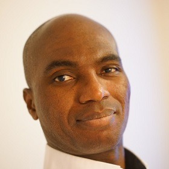

Const Correctness Taken Out of C++!
Const object is a cornerstone of C++ (not to be confused with the immutable object in functional languages). No other computer language has const object. Popular languages, like C# and JavaScript, can only declare const basic type variables. Const object has always been a source of added complexity to the C++ language. Const correctness requires to add in the language, a mutable keyword and const_cast to cast away the constness for modifying member within a const member function. These two features break the semantics of constness. But without them, it is not possible to write a const getter that implements memoization under the hood.
Despite the code safety the feature introduced, const correctness of C++ has never been put forward as a fix to any of the Common Weakness Enumeration (CWE) vulnerabilities. What const correctness (and its colossal efforts to maintain so) is able to do is to prevent the accidental modification of in-only const reference argument inside a function call.
Object-Oriented Programming (OOP) languages, like C++, enjoy tremendous success and popularity precisely because OOP models after the real world so well. Like Greek philosopher Heraclitus said, "The only constant in life is change!". Therefore, it has been proposed to remove the constant object in C++, leaving only constant basic types. Future C++ compilers shall ignore the const declaration of functions and treat them as non-const. If both const and non-const versions of the same function exist, only the non-const one shall be considered for compilation.
What keeps Bjarne Stroustrup up at night?
Answer: The growing enormity of C++ complexity.

Portrait of middle-aged Bjarne Stroustrup (Courtesy of Jeniffer Kohnke)
To address the C++ language complexity, Bjarne Stroustrup had founded the C-- (pronounced as "C deduct deduct" and "Cdd" in abbreviation) committee. There will be no proposal submission/approval process in C-- committee. Every week, all C-- members come together to vote out an existing C++ feature.
Within C++, there is a much smaller and cleaner language struggling to get out" - Bjarne Stroustrup, inventor of C++.
Perfection is achieved, not when there is nothing more to add, but when there is nothing left to take away." - Antoine de Saint-Exupery, pioneering aviator.
You have to work hard to get your thinking clean to make it simple." - Steve Jobs, co-founder of Apple Computer and Pixar Animations.
Simplicity is the ultimate sophistication." - Leonardo Da Vinci, painter, engineer, scientist, theorist, sculptor and architect.
Less is more." - Ludwig Mies van der Rohe, German-American architect.
Testimonial section: Read what these famous people have to say about C--!
"I am the first member to join C-- committee. My number 1 task is to revert 'Forwarding Reference' back to 'Universal Reference'!" – Scott Meyers, C++ retiree and C-- first joiner
"Neuroscience has shown the human brain can only focus maximum 4 pieces of information at any given time. It's mind-boggling that why decades of neuroscience studies haven't gone into computer language evolution until now! Lesser (language) rules to keep track of means less coding mistake and more robust secure system." - Mayim Bialik, neuroscientist and actress on the television show "The Big Bang Theory"

"In this year's CddCon (renamed from CppCon), Microsoft announced the latest Visual C++ with the option to remove the C++ feature you do not want. What?! Why isn't modules on the selection list?! Hey, you are not supposed to remove the feature proposed by me! Those proposals took years of painstaking efforts to write! I shredded 5 pounds before it was approved!" - Gabriel Dos Reis - Principal Software Development Engineer at Microsoft
"There are mass resignations in the C++ committee to jump onto the bandwagon of C--! At this rate, there won't be enough members to ratify C++23." - Herb Sutter, C++ Committee Chairman
"Apple has been quietly monitoring the C-- development and secretly working on Swift's replacement for quite some time. We have not forgotten you for those Mac developers who are still on Objective-C. Swift and Objective-C are to be replaced by Sloth and Subjective-C." - Tim Cook, CEO of Apple
"Not to be left behind by C--, Microsoft has come up with CBlunt and Visual Advance.Net to replace CSharp and Visual Basic.Net!" - Anders Hejlsberg, inventor of CSharp
"Up against MANGA and to make America great again, the only way is to rewrite my Truth Social in *PURE* C--!" - Donald Trump, ex-POTUS
"At Intel, we believe Bjarne Stroustrup is onto something and his new approach to computer language is transferable to processor technology. Right now, four efficiency cores take up the silicon estate equivalent to one performance core, but together, they provide more performance than a P core. Intel is experimenting with adding more E cores and fewer P cores in the future product line-up. By removing hyperthreading, superscalar pipelining, out-of-order execution and other less-used features also mean less silicon, more yield, and eliminating Spectre and Meltdown type of vulnerabilities." - Patrick P. Gelsinger, CEO of Intel
"Bjarne Stroustrup earth-shattering C-- announcement has caused such an upheaval in the software development world that even Google takes notice. Google believes it can also be applied to software frameworks. Google shall slowly remove the latest Angular version one by one down to AngularJS. Google advocates developers to Be Home On-Time (HOT), Off Work On-Time (OWOT), and stop chasing after the latest/greatest software frameworks." - Sundar Pichai, CEO of Google
"Coming from a C# background to C++, it baffles me that why C++ has copy constructor. C# doesn't have it and I have never had a need to copy objects in C#. Because copy constructor is slow, C++11 came up with move constructor. Complexity(copy ctor) begets even more complexity(move ctor). Simple is the way to go. C-- is the right direction. This is the way." - Mandalorian, bounty hunter
Happy April Fool!
Do note that C-- and the testimonials are not real, they are jokes to bring laughter and in no way did these great persons make those statements herein. However, before the testimonial section, all the quotes are genuinely and correctly attributed to their speakers. Hope you have a good laugh at my April Fool's post. Note: the jokes are not meant to be taken seriously. If you crave more, please have a look at previous years' jokes.
- 2019: C++23: fullptr to replace nullptr
- 2020: C++23: Mutable string_view
- 2021: C++23: -> and :: to be replaced by . operator
See you next year!